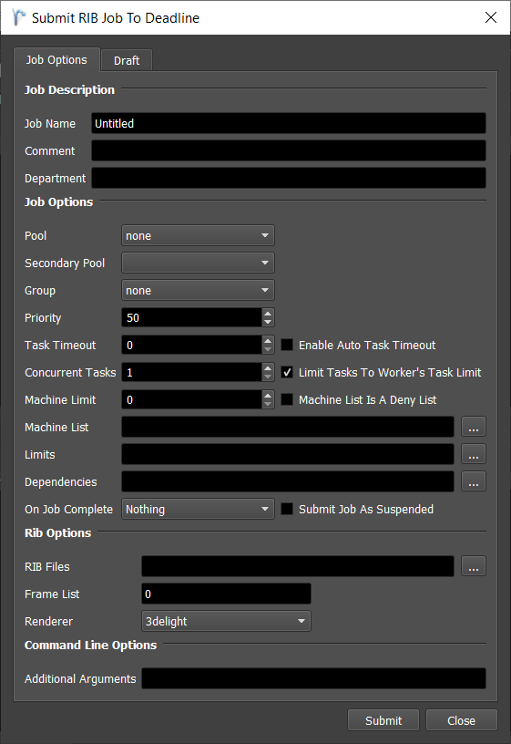
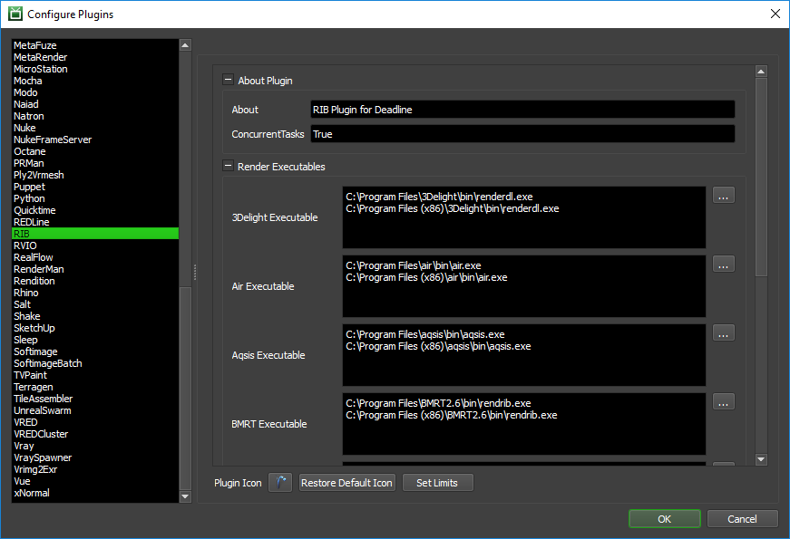

RenderMan (RIB)¶
Job Submission¶
You can submit RenderMan jobs from the Monitor.
Submission Options¶
The general Deadline options are explained in the Job Submission documentation, and the Draft/Integration options are explained in the Draft and Integration documentation. Note that a Draft job can only be submitted if Deadline is able to parse absolute Display paths from the selected rib file. If it cannot extract the output paths, it will let you know during submission so that you can disable the Draft job option.
The RIB specific options are:
RIB Files: The RIB files to be rendered (can be ASCII or binary formatted). These files should be network accessible.
Renderer: The renderer that will be used to render the RIB files.
Additional Arguments: Specify additional command line arguments you would like to pass to the RIB renderer. See the documentation for your particular RIB renderer for additional arguments.
Plugin Configuration¶
You can configure the RIB plugin settings from the Monitor. While in power user mode, select Tools -> Plugins Configuration and select the RIB plugin from the list on the left.
Render Executables
Executable: The path to the RIB executable file used for rendering. Enter alternative paths on separate lines. Different executable paths can be configured for each RIB renderer installed on your render nodes.
FAQ¶
Which RIB renderes are supported by Deadline?
- The following renders are supported:
3Delight
Air
Aqsis
BMRT
Entropy
Pixie
RenderDotC
RenderMan
RenderPipe
If you use a RIB renderer that is not on this list, please contact Deadline Support and let us know.
Errors Messages and Meanings¶
This is a collection of known RIB error messages and their meanings, as well as possible solutions. We want to keep this list as up to date as possible, so if you run into an error message that isn’t listed here, please contact Deadline Support and let us know.
Currently, no error messages have been reported for this plugin.

{kind=link}
{kind=link}